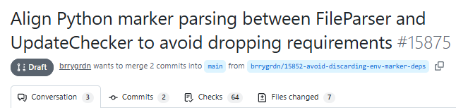
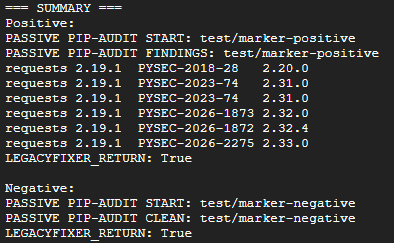

A result showing “0 vulnerabilities” does not always mean that every relevant dependency was actually analyzed.
In August 2026, while investigating a Python dependency-graph issue in
dependabot-core, a defect was identified in the way
Dependabot’s Python FileParser evaluates certain
environment-marker expressions in requirements.txt.
The problem is subtle: a valid dependency can be removed from the resolved dependency information before downstream security analysis can use it.
A proposed fix exists in Dependabot Pull Request #15875, “Align Python marker parsing between FileParser and UpdateChecker to avoid dropping requirements.”
At the time of our verification, PR #15875 was still a Draft, remained a work in progress, required review, and had not been merged.

What are Python environment markers?
Python dependencies can be conditional on characteristics of the environment in which a project runs.
For example:
greenlet==3.5.4 ; python_version >= "3.9" and platform_machine == "x86_64"
This means that greenlet==3.5.4 applies only when both
conditions are true:
- the Python version is at least 3.9;
- the machine architecture is
x86_64.
Environment markers are a normal part of Python packaging. The problem begins when a tool evaluates the expression incorrectly and decides that a valid dependency should not be included.
The defect identified in Dependabot
PR #15875 documents inconsistent behavior in Dependabot’s legacy marker handling.
An expression using or could retain the dependency:
python_version >= "3.9" or platform_machine == "x86_64"
while an expression combining the same types of conditions using
and could cause the dependency to be discarded:
python_version >= "3.9" and platform_machine == "x86_64"
The PR author narrowed the defect to the legacy marker handling in
FileParser when Python-version and platform conditions are
combined with and. The regression tests added in the
proposed fix verify that valid dependencies such as
greenlet remain present in the resolved dependency graph.
The proposed fix moves marker evaluation toward a shared evaluator so
that FileParser and UpdateChecker apply the
logic consistently. The PR also includes dependency-graph regression
coverage for compiled requirements containing marker expressions.
Why this matters for dependency security
The problem is not simply that a dependency graph may become incomplete.
If a dependency disappears before vulnerabilities are matched against resolved package versions, the absence of a finding becomes ambiguous.
These two outcomes are fundamentally different:
Dependency analyzed → no vulnerability foundand:
Dependency excluded before analysis → no vulnerability reportedBoth can eventually appear to the user as “nothing found.”
From a security perspective, however, they are not equivalent.
This is one of the more difficult failure modes in dependency automation: it is necessary to verify not only the findings produced by a scanner, but also whether the correct dependency set reached the scanner in the first place.
Testing the same marker structure with LegacyFixer
LegacyFixer uses pip-audit in its passive scanning path for
a repository containing requirements.txt.
That path is detect-only: it does not invoke --fix, create
branches, commit changes, or push modifications to the repository.
We tested one specific question:
Does the LegacyFixer passive-scanning path reproduce the same failure mode for a python_version AND platform_machine expression?
We did not assume the answer.
The test environment was:
Python 3.12.3
Linux x86_64
pip-audit 2.10.1Both conditions in the following marker were therefore true:
greenlet==3.5.4 ; python_version >= "3.9" and platform_machine == "x86_64"pip-audit retained the dependency explicitly:
greenlet==3.5.4We then changed only the Python condition:
greenlet==3.5.4 ; python_version < "3.9" and platform_machine == "x86_64"In the same environment, that expression is false.
greenlet was excluded.
This negative control matters because it shows that the marker was actually being evaluated rather than simply ignored.
Testing through the actual LegacyFixer passive-scan routine
We then tested the real LegacyFixer passive-scan function rather than
calling pip-audit alone.
To make the result directly observable, we used:
requests==2.19.1because this version produces known vulnerability findings in the test environment.
The positive case was:
requests==2.19.1 ; python_version >= "3.9" and platform_machine == "x86_64"LegacyFixer reported:
PASSIVE PIP-AUDIT FINDINGS
and the output contained vulnerability findings for
requests==2.19.1.
For the negative control, we used:
requests==2.19.1 ; python_version < "3.9" and platform_machine == "x86_64"LegacyFixer reported:
PASSIVE PIP-AUDIT CLEANbecause the false environment marker correctly excluded the dependency in that environment.
The screenshot below shows the positive and negative cases from the
controlled LegacyFixer run. Both use an and expression:
the Python condition alone is changed so that the marker is true in
one case and false in the other.

The result can be summarized as follows:
| Test case | Result |
|---|---|
| Satisfied environment marker | Dependency retained and audited |
| Unsatisfied environment marker | Dependency excluded |
Satisfied python_version AND platform_machine
|
The Dependabot failure mode documented in PR #15875 was not reproduced |
What this test demonstrates — and what it does not
The experiment demonstrates that, in the case we tested, the LegacyFixer detect-only path did not reproduce the specific marker-evaluation failure mode documented in Dependabot PR #15875.
It does not demonstrate that LegacyFixer is immune to every possible environment-marker problem.
It does not demonstrate that LegacyFixer is generally more correct than Dependabot.
And this was not a benchmark in which both products were executed side by side against the same repository.
The Dependabot defect is documented upstream through its own regression test and proposed fix. Our LegacyFixer experiment was performed separately using the same logical marker structure.
That distinction matters.
Detection first, modification later
The case also illustrates why LegacyFixer separates dependency detection from repository modification.
In passive mode, the first question is:
What problems exist?
The scanner can answer that question without automatically turning every result into a branch or Pull Request.
A separate decision can then determine whether a repository modification should be proposed.
This architecture cannot eliminate every possible scanning error. No dependency-security tool can make that assumption.
But it reduces the number of stages in which an uncertain detection result immediately produces repository changes.
In dependency automation, more automation does not automatically mean more certainty.
Sometimes the safer sequence is simpler:
First verify the signal. Then decide whether the code should change.